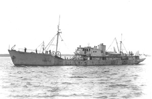

|  copyright - WHOI |
|
The vessel first sailed under the name Harvard for the North Atlantic Fishery Investigations. In 1941 she was rebuilt, renamed Bellefonte and used by the US Navy for war patrol. Upon her return to Woods Hole in 1944, under the name Albatross III, the vessel was used intermittently until 1955, when funding became available. Albatross III was under full operation until 1959, when decommissioned and sold to a Hyannis, MA, fisherman.
Albatross III was loaned to the Woods Hole Oceanographic Institution from 1951-1952, and was also used jointly on other cruises from 1948-1959. Albatross III made a total of 128 cruises, all in the North Atlantic. Most of these were part of fisheries investigations, but many cruises included hydro stations, bottom photographs, drift bottle exercises, and current measurements.